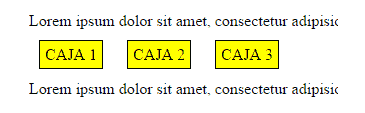
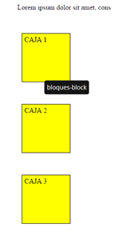
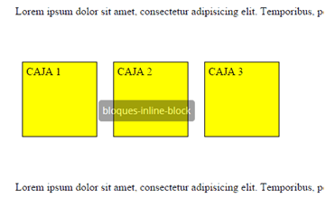

Las propiedades de CSS son identificadas como valores o atributos que nos permite estilizar nuestros contenidos en html, estas propiedades abarcan una gran variedad de opciones entres las cuales se encuentran las más utilizadas y comunes a la hora de desarrollar páginas web:
transforma los elementos en forma de línea sin respetar las otras propiedades, como anchos, altos, etc. Reduce su tamaño exclusivamente hasta lo que abarca su contenido, descartando las propiedades width y height.
por lo general es el estilo por defecto de los elementos contenidos en nuestros documentos html, este elemento intenta abarcar todo el ancho posible.
Esta es la combinación de las propiedades inline – block esta combinación de propiedades si puede ocupar el ancho que le indiquemos, respetando otras propiedades como width y coloca el elemento en línea al costado de elementos hermanos que también tengan display: inline o inline-block.
